Procesos y Subprocesos:
Contenido:
Procesos y Subprocesos
Procesos
De manera predeterminada, todos los componentes de la misma aplicación se ejecutan en el mismo proceso, y la mayoría de las aplicaciones no deben cambiar esto. No obstante, si necesitas controlar a qué procesos pertenece un componente determinado, puedes hacerlo en el archivo de manifiesto.
Ciclo de vida de los procesos
1. Proceso en primer plano
Un proceso que es necesario para lo que el usuario está haciendo en ese momento. Se considera que un proceso está en primer plano si alguna de estas condiciones es verdadera:
2. Proceso visible
Un proceso que no tiene ningún componente en primer plano, pero que puede afectar lo que el usuario ve en la pantalla. Se considera que un proceso es visible si alguna de estas condiciones es verdadera:
· Aloja una Activity que no esté en primer plano y sea visible para el usuario (se llamó a su método onPause () .
· Aloja un Service que está vinculado con una actividad visible (o en primer plano).
3. Proceso de servicio
Proceso que ejecuta un servicio iniciado con el método startService () y que no corresponde a ninguna de las dos categorías precedentes de más importancia. Aunque los procesos de servicio no están vinculados directamente con nada de lo que el usuario ve, generalmente hacen cosas que le interesan al usuario (como reproducir música en segundo plano o descargar datos en la red), por lo que el sistema los mantiene en ejecución a menos que no haya suficiente memoria para retenerlos junto con los procesos en primer plano y visibles.
4. Proceso en segundo plano
Un proceso que tiene una actividad que actualmente no es visible para el usuario (se llamó al método onStop () de la actividad. Estos procesos no tienen un efecto directo en la experiencia del usuario, y el sistema puede finalizados en cualquier momento para recuperar memoria para un proceso en primer plano, visible o de servicio. Por lo general, se ejecutan muchos procesos en segundo plano, por lo que se los mantiene en una lista LRU (menos usado recientemente) para garantizar que el proceso con la actividad que el usuario vio más recientemente sea la última en finalizarse.
5. Procesos vacíos
Un proceso que no tiene ningún componente de la aplicación activo. El único motivo para mantener este tipo de proceso activo es por fines de la memoria caché, para mejorar el tiempo de inicio la siguiente vez que un componente necesite ejecutarlo.
Android coloca un proceso en el nivel más alto que puede, según la importancia de los componentes actualmente activos en el proceso.
Subprocesos
Cuando una aplicación se inicia, el sistema crea un subproceso de ejecución para la aplicación, que se denomina "principal". Este subproceso es muy importante porque está a cargo de distribuir eventos a los widgets correspondientes de la interfaz de usuario, incluidos los eventos de dibujo. También es el subproceso en el cual tu aplicación interactúa con los componentes del kit de herramientas de la IU de Android (componentes de los paquetes android.widget y android.view). Por esto, al subproceso principal también se lo suele denominar el subproceso de IU.
Solo existen dos reglas para el modelo de subproceso único de Android:
· No bloquear el subproceso de IU
· No acceder al paquete de herramientas de la IU de Android desde fuera del subproceso de IU
Subprocesos de trabajo
Debido al modelo de subproceso único descrito previamente, es fundamental para la capacidad de respuesta de la IU de la aplicación que no bloquee el subproceso de IU. Si tienes que realizar operaciones que no son inmediatas, debes asegurarte de hacerlo en subprocesos separados (subprocesos "en segundo plano" o "de trabajo").
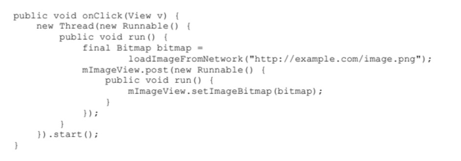
Gráfico 1gestor de clicks que descarga una imagen en un subproceso
Uso de la AsyncTask
La AsyncTask te permite realizar trabajo asincrónico en la interfaz de usuario. Realiza las operaciones de bloqueo en un subproceso de trabajo y, luego, publica los resultados en el subproceso de IU, sin que tú tengas que manejar los subprocesos o los controladores.
Para usarla, debes crear una subclase de la AsyncTask e implementar el método de callback do InBackground() , que se ejecuta en un grupo de subprocesos en segundo plano. Para actualizar la IU, debes implementar onPostExecute () , que entrega el resultado de doInBackground( ) y se ejecuta en el subproceso de IU. Por ello, puedes actualizar con seguridad tu IU. Luego, puedes ejecutar la tarea llamando a execute () desde el subproceso de IU.
Por ejemplo, puedes implementar el ejemplo precedente con la AsyncTask de esta manera:
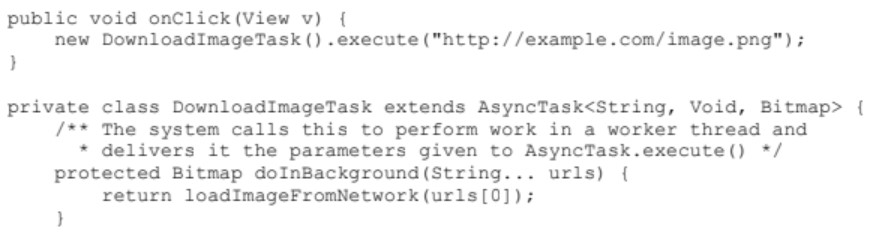 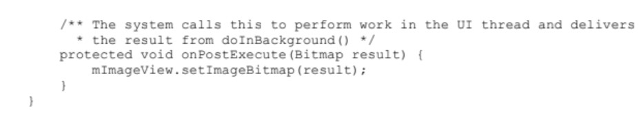Métodos seguros para subprocesos
En algunos casos, los métodos que implementas podrían ser llamados por más de un subproceso y por lo tanto, se los debe escribir para que sean seguros para subprocesos.
Esto es particularmente cierto para los métodos que se pueden llamar de manera remota (como los métodos en un servicio vinculado). Cuando la llamada a un método implementado en un IBinder se origina en el mismo proceso en el que el IBinder se está ejecutando, el método se ejecuta en el subproceso del emisor. Sin embargo, cuando la llamada se origina en otro proceso, el método se ejecuta en un subproceso elegido de entre un grupo de subprocesos que el sistema mantiene en el mismo proceso que el IBinder (no se ejecuta en el subproceso de IU del proceso).
Comunicación entre procesos
Android ofrece un mecanismo para comunicación entre procesos (IPC) con llamadas de procedimiento remoto (RPC), en el que una actividad u otro componente de la aplicación llama a un método, pero se lo ejecuta de manera remota (en otro proceso), y los resultados se devuelven al emisor.
Envío de operaciones a varios subprocesos
La velocidad y la eficiencia de una operación de larga duración con uso intensivo de datos a menudo mejora cuando se divide en operaciones más pequeñas que se ejecutan en varios subprocesos. En un dispositivo que tiene una CPU con varios procesadores (núcleos), el sistema puede ejecutar los subprocesos en paralelo, en lugar de hacer que cada suboperación espere una oportunidad para ejecutarse. Por ejemplo, la decodificación de varios archivos de imagen para mostrarlos en una pantalla de miniaturas se ejecuta sustancialmente más rápido cuando realiza cada decodificación en un hilo independiente.
Especificar el código para ejecutar en un subproceso
Se muestra cómo implementar una clase Runnable, que ejecuta el código en su Runnable. método run () en un hilo separado. También puede pasar un Runnable a otro objeto que luego puede adjuntarlo a un hilo y ejecutarlo. Uno o más objetos Ejecutables que realizan una operación en particular a veces se denominan tareas.
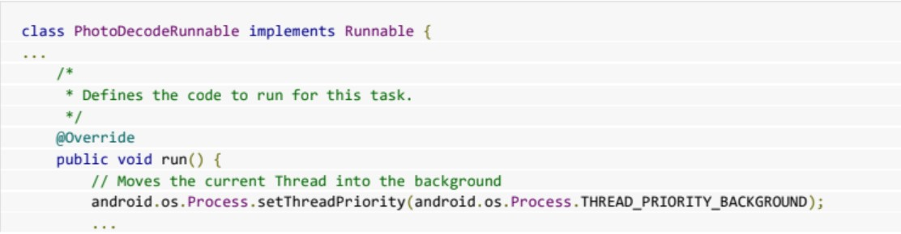 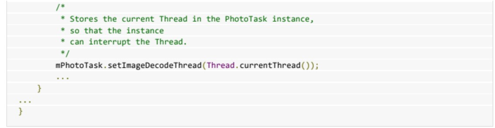
Crear un administrador para varios subprocesos
Si desea ejecutar una tarea repetidamente en diferentes conjuntos de datos, pero solo necesita una ejecución a la vez, un lntentService se adapta a sus necesidades. Para ejecutar tareas automáticamente a medida que los recursos estén disponibles, o para permitir que se ejecuten varias tareas al mismo tiempo (o ambos), debe proporcionar una colección administrada de subprocesos. Para hacer esto, use una instancia de ThreadPoolExecutor, que ejecuta una tarea desde una cola cuando un hilo en su grupo se libera. Para ejecutar una tarea, todo lo que tiene que hacer es agregarla a la cola.
Definir la clase de grupo de subprocesos
· Usa un constructor privado
· Comience sus tareas llamando a métodos en la clase de grupo de subprocesos.
· Defina un método en la clase de grupo de subprocesos que agrega una tarea a la cola de un grupo de subprocesos.
Por ejemplo:
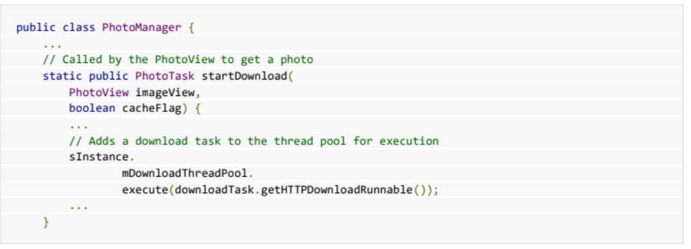Cree una instancia en el constructor y adjúntela al hilo de la interfaz de usuario de su aplicación.
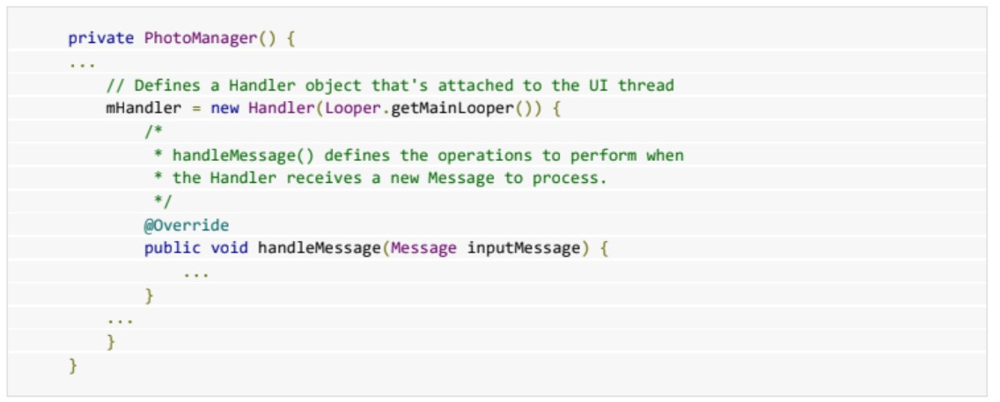Determinar los parámetros del grupo de subprocesos
Una vez que tenga la estructura general de clases. puede comenzar a definir el grupo de subprocesos. Para crear una instancia en el objeto ThreadPoolExecutor. necesita los siguientes valores:
· Tamaño del pool inicial y tamaño máximo del pool.
· Mantener vivo el tiempo y la unidad de tiempo
· Una cola de tareas
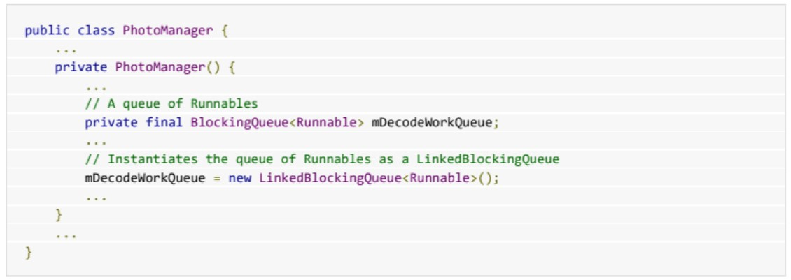Crear un grupo de subprocesos
Para crear un grupo de hilos. Cree una instancia de un administrador de grupo de subprocesos llamando a ThreadPoolExecutor (). Esto crea y administra un grupo restringido de subprocesos. Porque el tamaño del grupo inicial y el tamaño máximo del grupo son los mismos. ThreadPoolExecutor crea todos los objetos de hilo cuando se crea una instancia. Por ejemplo:
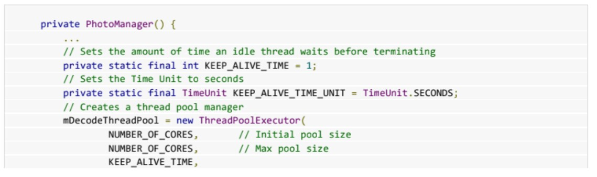 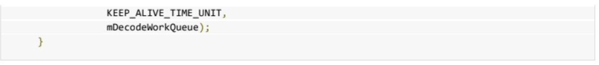
Ejecución de código en un subproceso de grupo de subprocesos
Para hacer esto, agrega la tarea a la cola de trabajo del grupo. Cuando un hilo está disponible, ThreadPoolExecutor toma una tarea de la cola y la ejecuta en el hilo.
Ejecutar una tarea en un subproceso en el grupo de subprocesos
Para iniciar un objeto de tarea en un hilo en un grupo de hilos en particular pase el Runnable a ThreadPoolExecutor.execute (). Esta llamada agrega la tarea a la cola de trabajo del grupo de subprocesos. Cuando un hilo inactivo está disponible el administrador toma la tarea que ha estado esperando por más tiempo y la ejecuta en el hilo:
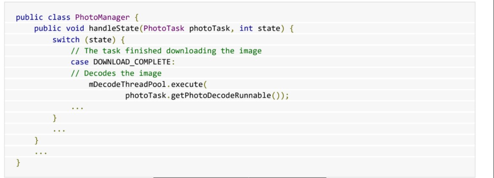Interrumpir código en ejecución
Para detener una tarea necesitas interrumpir el hilo de la tarea. Prepararse para hacer esto. debe almacenar un identificador para el hilo de la tarea cuando crea la tarea. Por ejemplo:
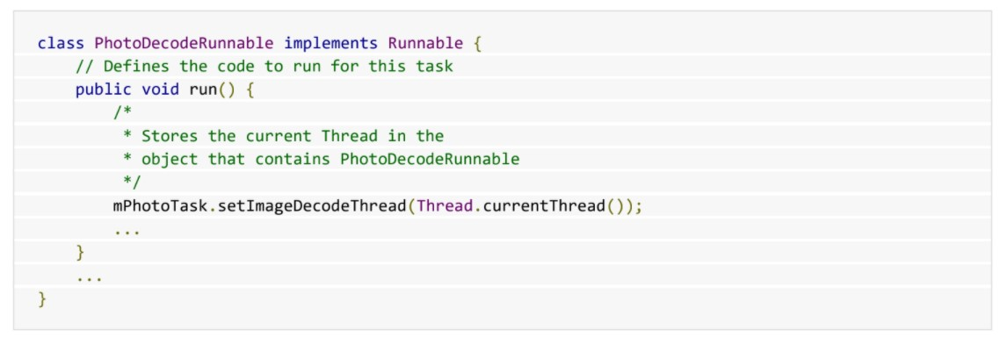Para interrumpir un hilo. llamar a Thread.interrupt (). Observe que los objetos están controlados por el sistema. que puede modificarlos fuera del proceso de su aplicación. Por esta razón. debe bloquear el acceso a un hilo antes de interrumpirlo. colocando el acceso en un bloque sincronizado.
Comunicación con el hilo de la interfaz de usuario
Enviar datos desde la tarea a los objetos que se ejecutan en el hilo de la interfaz de usuario (UI). Esta función permite que sus tareas trabajen en segundo plano y luego muevan los resultados a elementos de la interfaz de usuario como mapas de bits.
Definir un controlador en el hilo Ul
Handler es parte del marco del sistema Android para administrar subprocesos. Un objeto Handler recibe mensajes y ejecuta código para manejar los mensajes. Normalmente creas un Handler para un nuevo hilo. pero también puedes crear un Handler que está conectado a un hilo existente. Cuando conecta un a su hilo de interfaz de usuario. el código que maneja los mensajes se ejecuta en el hilo de la interfaz de usuario.
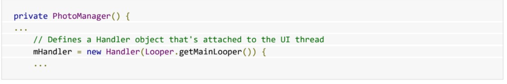Dentro de Handler, override el handlerMessage (). El sistema Android invoca este método cuando recibe un nuevo mensaje para un hilo que está administrando: todos los objetos Handler para un hilo en particular reciben el mismo mensaje.
Por ejemplo:
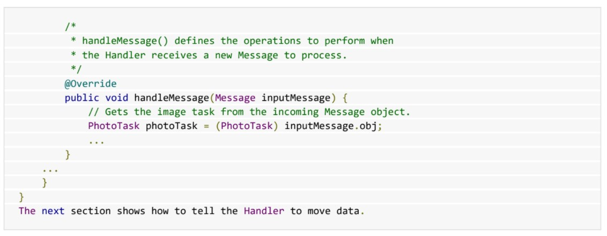Mover datos de una tarea al subproceso de la interfaz de usuario
Almacenar datos en el objeto de la tarea
Por ejemplo, aquí hay un Runnable, que se ejecuta en un hilo de fondo. que decodifica un 3itmap y lo almacena en su objeto principal PhotoTask. Runnable también almacena el código de estado DECODE_STAT E_COMPLETED.
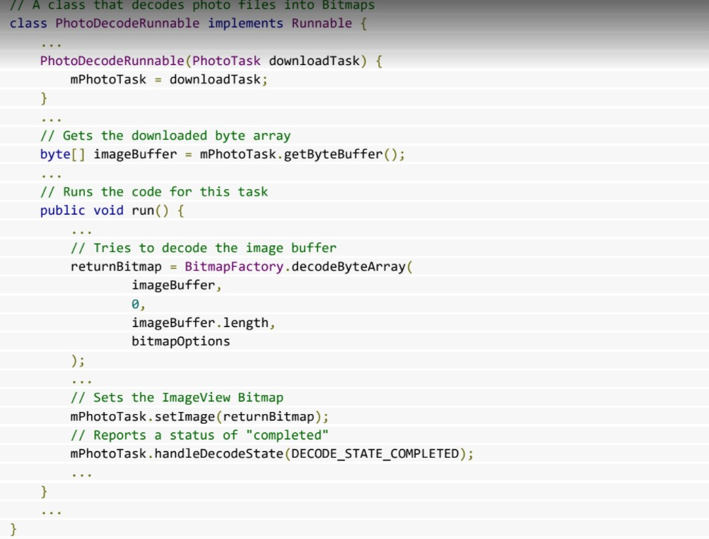Enviar estado a la jerarquía de objetos
PhotoTask es el siguiente objeto superior en la jerarquía. Mantiene referencias a los datos decodificados y al objeto que mostrará los datos. Recibe un código de estado de PhotoDecodeRunnable y lo pasa al objeto que mantiene grupos de subprocesos y crea instancias
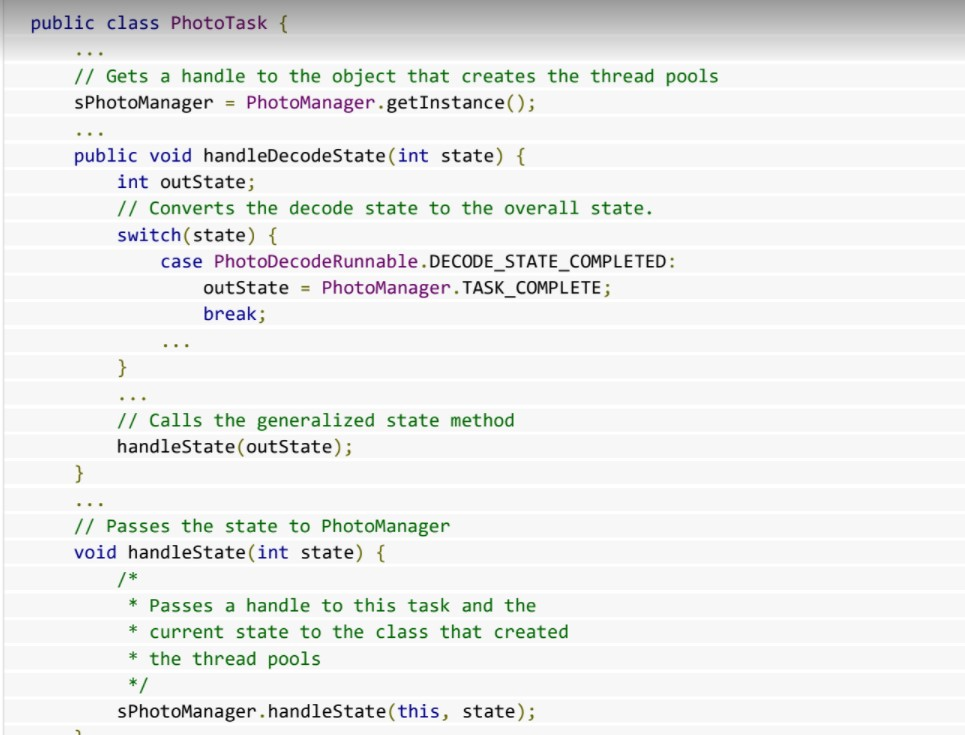Mover datos a la U I
Desde el objeto PhotoTask, el objeto PhotoManager recibe un código de estado y un identificador para PhotoTaskObject. Debido a que el estado es TASK_COMPLETE, crea un mensaje que contiene el estado y el objeto de tarea y lo envía al controlador:
Finalmente, Handler.handleMessage () comprueba el código de estado de cada mensaje entrante. Si el código de estado es TASK_COMPLETE, la tarea ha finalizado y el objeto PhotoTask del mensaje contiene tanto un Bitmap como un ImageView. Porque Handler.handleMessage () se está ejecutando en el subproceso de la interfaz de usuario, puede mover de forma segura Bitmap a ImageView:
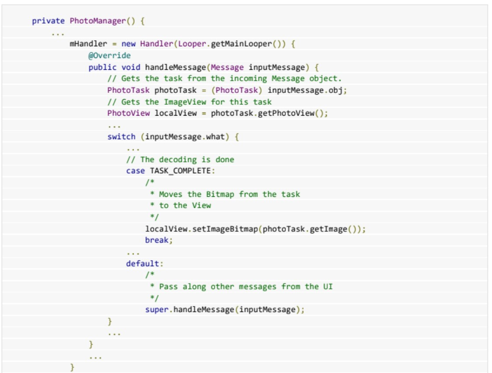Cómo mantener la capacidad de respuesta de tu app
En Android, para protegerse contra aplicaciones que no tienen la capacidad de respuesta suficiente por un período de tiempo, el sistema muestra un diálogo que informa que tu app dejó de responder. En este punto, tu app no respondió durante un período considerable de tiempo, por lo que el sistema le ofrece al usuario la opción de salir de la app. Es fundamental diseñar la capacidad de respuesta de tu aplicación para que el sistema nunca muestre un diálogo de ANR al usuario.
¿Qué activa un ANR?
Generalmente, el sistema muestra un error de ANR si una aplicación no responde a los datos de entrada del usuario. Por ejemplo, si una app bloquea alguna operación de I/O (normalmente, un acceso a la red) en el procesamiento de IU, el sistema no puede procesar los eventos de entrada del usuario. También puede suceder que la app tarde demasiado creando una estructura en memoria elaborada o calculando el siguiente movimiento en un juego en el procesamiento de IU. Es importante asegurarse de que estos cálculos sean eficientes (aunque incluso el código más eficiente requiere tiempo para ejecutarse).
¿Cómo evitar los ANR?
Cualquier método que se ejecute en el subproceso de IU debe realizar el menor trabajo posible en ese subproceso. Particularmente, las actividades deben hacer lo mínimo posible para configurarse en métodos de ciclo de vida fundamentales, como onCreate () y onResume(). Las operaciones de larga duración (como las de red o base de datos) o los cálculos de mayor exigencia computacional (como el cambio de tamaño de los mapas de bits) deben realizarse en un subproceso de trabajo o, en el caso de las operaciones de bases de datos, mediante una solicitud asíncrona.
Cómo reforzar la capacidad de respuesta
· Si tu app realiza tareas en segundo plano como respuesta a una entrada del usuario, muestra el progreso (por ejemplo, con un elemento ProgressBar en la IU).
· En el caso de los juegos, realiza los cálculos de los movimientos en un subproceso de trabajo.
· Si tu aplicación tiene una fase inicial que consume mucho tiempo, considera mostrar una pantalla de presentación o procesar la vista principal lo más pronto posible, indicar que la aplicación está cargando y completar la información de forma asíncrona. En cualquier caso, de alguna manera deberías mostrar el progreso para que el usuario sepa que la aplicación no se bloqueó.
· Usa herramientas de rendimiento, como Systrace y Traceview, para determinar cuellos de botella en la capacidad de respuesta de tu app.
Accede aquí para tener más información